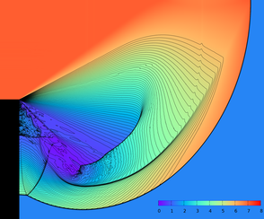

|

|
|
Abstract:
We consider complex scenarios involving two-way coupled interactions between compressible fluids and solid bodies under extreme conditions where monolithic, as opposed to partitioned, schemes are preferred for maintaining stability. When considering such problems, spurious numerical cavitation can be quite common and have deleterious consequences on the flow field stability, accuracy, etc. Thus, it is desirable to devise numerical methods that maintain the positivity of important physical quantities such as density, internal energy and pressure. We begin by showing that for an arbitrary flux function, one can put conditions on the time step in order to preserve positivity by solving a linear equation for density fluxes and a quadratic equation for energy fluxes. Our formulation is independent of the underlying equation of state. After deriving the method for forward Euler time integration, we further extend it to higher order accurate Runge-Kutta methods. Although the scheme works well in general, there are some cases where no lower bound on the size of the allowable time step exists. Thus, to prevent the size of the time step from becoming arbitrarily small, we introduce a conservative flux clamping scheme which is also positivity preserving. Exploiting the generality of our formulation, we then design a positivity preserving scheme for a semi-implicit approach to time integration that solves a symmetric positive definite linear system to determine the pressure associated with an equation of state. Finally, this modified semi-implicit approach is extended to monolithic two-way solid-fluid coupling problems for modeling fluid structure interactions such as those generated by blast waves impacting complex solid objects.
|

![[PHOTO]](../../images/knight_small.png)